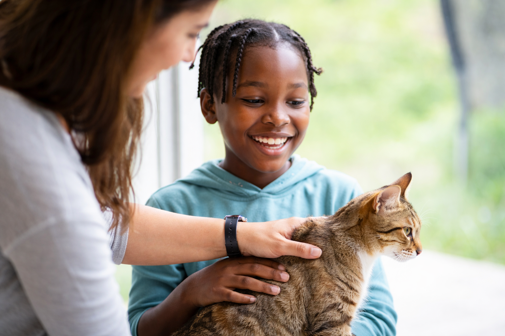
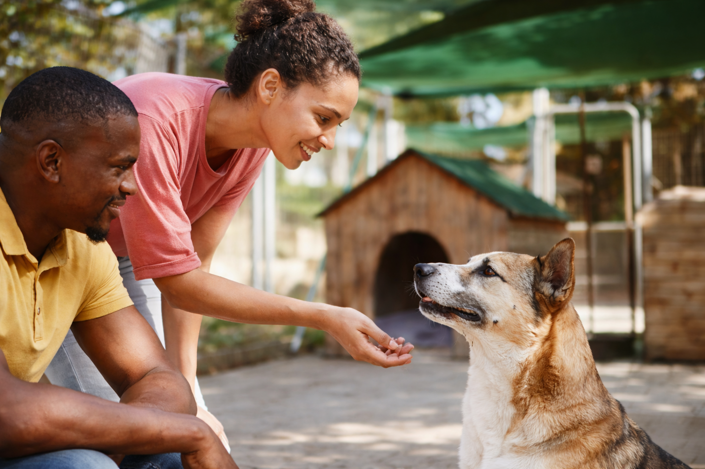

Buddy

Buddy is a playful and loving golden retriever who enjoys long walks and belly rubs. He gets along well with kids and other dogs and would make a wonderful addition to an active family.
View
Every animal deserves a loving home. At Happy Paws Animal Shelter, we rescue, care for, and rehome dogs and cats looking for their forever families. Start your adoption journey today and meet the companion who will change your life.
Buddy is a playful and loving golden retriever who enjoys long walks and belly rubs. He gets along well with kids and other dogs and would make a wonderful addition to an active family.
View

Luna is a gentle and curious cat who loves cozy naps and sunny windows. She enjoys quiet environments and would be the perfect companion for someone looking for a calm and affectionate friend.
View
Max is an energetic and loyal dog who loves playing fetch and exploring the outdoors. He is friendly, intelligent, and would thrive in a home that enjoys walks, adventures, and plenty of playtime.
View
Our volunteers are the heart of our shelter. From walking dogs to helping at adoption events, there are many ways you can make a difference in the lives of animals waiting for a home.

Happy Paws Animal Shelter has been helping animals find safe and loving homes for over a decade. Our dedicated team works tirelessly to rescue animals in need, provide medical care, and match them with families who will give them the love they deserve.